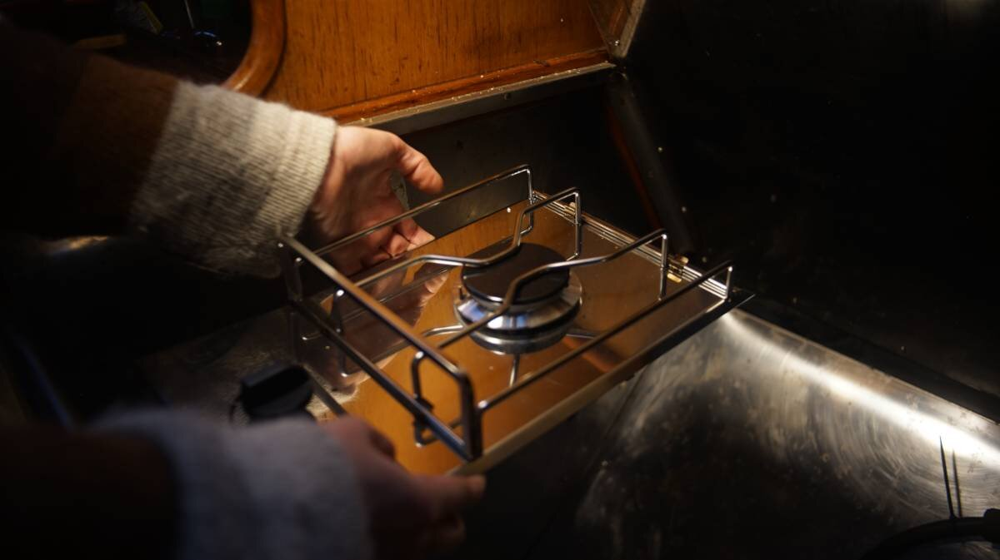
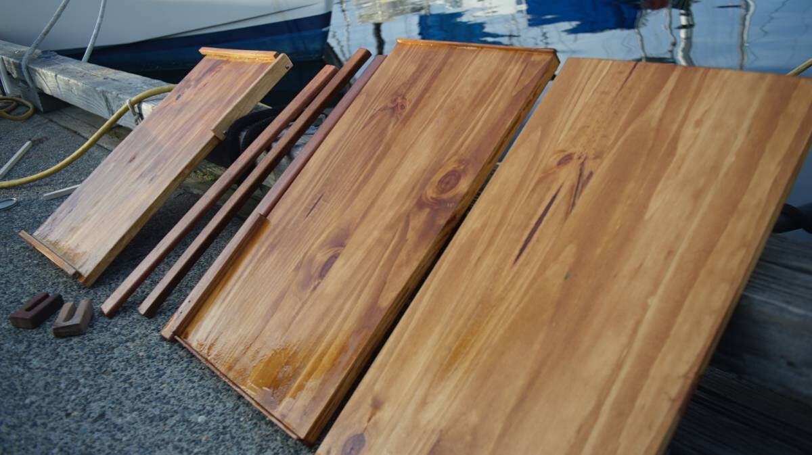
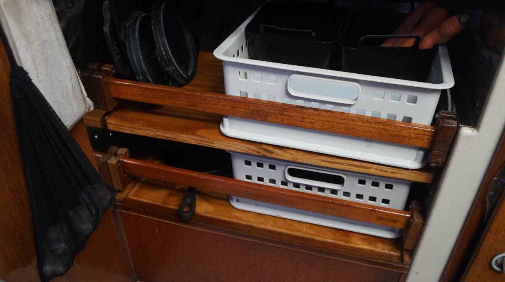
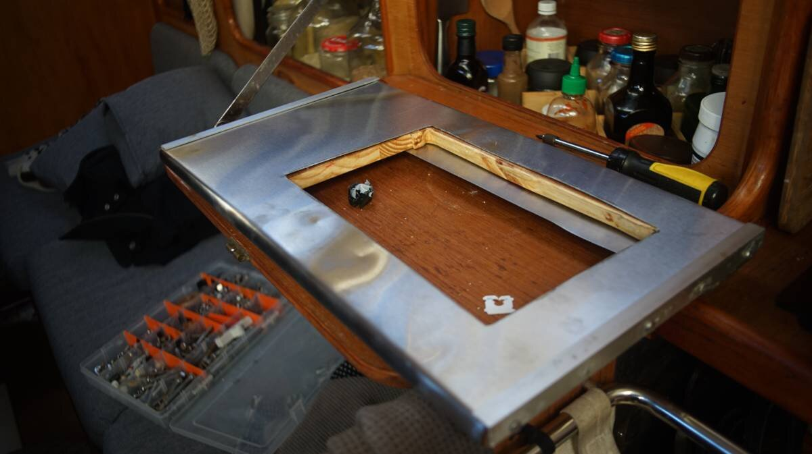

galley refit
2024.01.19
Victoria, BC.

Click below dates for more recent updates:
A long time goal aboard Pino has been to get rid of our Force10 3-burner LPG oven, and to replace it with a single burner.
In the winter we use a single induction plate, we realized that we don't need more burners to cook. We hadn't use the oven in over 3 years, preferring to make food on the stovetop and to solar cook(see solar cooking) in the summer.

We re-homed our LPG stove, it has served us well these past 8 years but it is time to build our dream galley.
With the stove gone, we gain a lot of storage space in the galley. Our plan is to gimbal the single LPG burner, and to build drawers and shelves underneath it to store our cast iron cookware and our produce. We've been living without refrigeration since 2016, keeping our produce in bins in the v-berth.
The two white bins in the above photo hold our produce, they're just leaning there, but give a good idea of what it's going to look like. It'll be nice to have the produce near the galley again!
Single LPG burners are not common, but a local marine store found us a European model with a converter(+15$) for the LPG connection(North American standards differ a little bit). The unit was 400$ new, but we got it for 250$CAD because of a defect. The LPG components are fine, the defect is cosmetic(the top SS plate has a slight bend to it).

This burner is made by Eno, a company that has swallowed up the once Canadian-owned Force10(the makers of our former LPG stove).

2024.02.04
Victoria, BC.
We bought a length of pine meant for shelving and used a circular saw(borrowed from a friend, thanks Peter!) to cut it into 4. Two will serve as shelves, the other two will support the burner. Pine is very light, so we stained the wood with coffee to help darken the grain, and applied varnish-to strengten them, to protect them from humidity and to make them easier to clean.
It's still cold outside, but we make use of sunny days to do work on the dock.
The back of the shelves have a lip on one side to keep the pots from sliding out when the boat is heeled over. The front will have a horizontal bar, secured by two hardwood U blocks. The two U blocks will be bolted(x3) to the walls. A lot of the shelves on the boat use this same design to keep objects in place.

The above horizontal bar is an off-cut used to test the blocks, the actual bars will be much longer than this but this photo gives a good preview of what we are attempting to do.
The U in the blocks were carved using a handsaw, a drill and a round file. We used the handsaw to cut two parallel(ish) lines to accommodate the width of the horizontal bar, then drilled a hole in the bottom of the U to help shave away some material(using the fattest drill bit we had), and then removed some of the left-over material with the round file. A chisel would work well, but we don't have one.

We carry a lot of small lengths of hard wood that are ideal for projects like this, wood that we've accumulated over the years, found on marina shelves, gifted by friends, bought at used marineware stores etc. We made the blocks out of some short lengths of teak.
When we were docked in Minamiise in Japan, (see a home for pino), the local yatch club were re-doing the docks out of some exotic hardwood and so we inherited a lot of small offcuts from them (they were throwing them away). The grain is a dark brown and we think it's from Central/South America, it might be Ipe or Tropical Walnut.
This is what the final shelves look like! The top basket holds produce like carrots, greens, and brussel sprouts, the lower basket houses potatoes and onions.
If you're interested in learning how to keep produce outside of the fridge, see this lovely write-up by Low-Tech Labs.
The gap on the side will act as storage for various cookware.
2024.02.06
Victoria, BC.
Sarah R. graciously gave us a sheet of SS she didn't need, which we cut to cover a length of wood that would nest our new gimballed burner.
We borrowed Peter's grinder because we somehow lost the locknut for ours(a replacement is on the way). Using it, we cut a hole in the SS sheet matching the size of our burner, and did the same for the wood piece that will sit underneath it (using another tool).
We had in mind to bend the SS sheet around the front and back, overlapping part of the bottom, but bending it by hand requires patience. We secured the SS sheet over the wood with several adjustable clamps, then laid the side on the ground(with a mat underneath) and used the weight of our bodies to make a bend. To bend it further so that it meets the side better, we placed a block of wood over the side(over the wood and SS) and banged on it with a rubber mallet.
Apparently, it is possible to work it into a bend using just a piece of wood but we couldn't manage it, it depends on the thickness of the SS. Even the rubber mallet wasn't enough to refine the edge, we also used a small drill press vise, setting the mouth of the vise over the edge(someone had to hold the bottom edge of the sheet down so that it could fit in the gap) and tightening the jaws as hard as we could. The jaws force the two sides down, forcing a bend. Because the vise is not wide, we loosened it, moved it a bit further, tightened it again, then repeated this process for the whole length.
The result was a decent bend (two bends per edge), perfect for our purpose. We drilled holes in the back and put in 4 screws per side to hold the metal onto the wood (the SS sheet bends over the edges and overlaps part of the bottom).
This is what the burner looks like when set into the hole. The burner is secured by way of 3 brackets(they come with the burner when you buy it).

We re-used two aluminum rails from a former project to protect the edges, isolating the two metals with some rubber(see effect of combining dissimilar metals). Insulating washers are also a good idea for the SS screws.
More updates on this project soon...